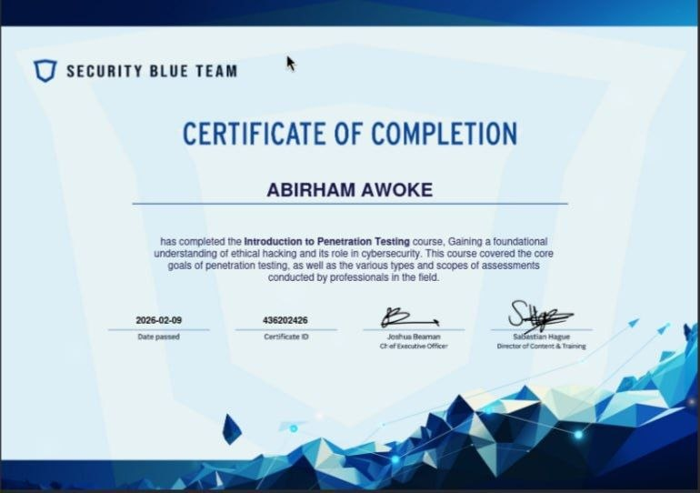
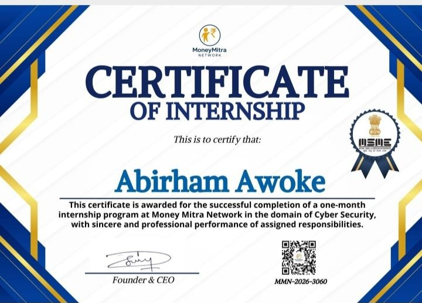

Executing: |
Career Goal: As an aspiring Red Team Operator and Penetration Tester, my goal is to secure enterprise environments by proactively identifying vulnerabilities, evaluating defensive infrastructures, and engineering resilient mitigation frameworks. I am dedicated to evolving into a top-tier security strategist within the offensive computing space.
I am a highly driven cybersecurity student and technical problem-solver based in Bahir Dar, Ethiopia. My journey into information security began with a deep curiosity about how systems function beneath the surface and how digital assets are defended against real-world threats. I possess strong foundational knowledge in network security, web applications, and offensive mechanics, which I continuously build upon through hands-on labs and practical application.
I am currently pursuing a Bachelor of Science (BSc) in Cyber Security at Bahir Dar University (Expected Graduation: Class of 2027). My coursework explores key foundational concepts including network architecture, data structures, secure software development, risk assessments, and cryptography.
My passion lies primarily within the realm of Offensive Security, Penetration Testing, and Red Teaming. I am fascinated by the logic behind exploit development and vulnerability assessment—specifically engineering simulation frameworks that replicate real-world adversarial tactics to actively harden an organization's defensive posture.
Deep understanding of the TCP/IP stack, routing protocols, subnetting, DNS, DHCP, and firewall configurations. Skilled in traffic analysis and packet inspection.
Proficient in Linux CLI administration, bash scripting, file system hierarchy, user management, and hardening techniques within Debian/Kali environments.
Hands-on experience with industry-standard security toolsets including Nmap, Burp Suite, OWASP ZAP, Metasploit, and vulnerability scanners.
Languages: Python (specializing in Flask & Django), Java, and C++ for robust software logic and systems programming.
Databases: Experience with relational database design, SQL queries, and data integrity principles.
Passionate about web application security, penetration testing, exploit research, privilege escalation, and simulating real-world Red Team attack vectors.
Problem Solving: Analytical approach to debugging script logic errors and analyzing complex binary exploitation puzzles.
Teamwork & Communication: Effective collaborator on group development tasks; skilled at translating complex technical findings into clear documentation.
Continuous Learning: High aptitude for self-paced research across fast-moving offensive security labs and emerging vulnerability profiles.
Designed and implemented a secure wireless network architecture focusing on resilient access management, protocol hardening, and traffic segregation principles.
Network SecurityDeveloped an AI-backed operational monitoring platform configured to flag, analyze, and assist in reporting campus infrastructural and digital security irregularities.
AI & EngineeringDesigned and engineered a secure electronic voting system backend. Integrated granular authentication models, data encryption, and hash integrity mechanisms to protect raw voting inputs from tamper vectors.
Web App Security

Looking for a security analyst intern, developer, or red team contributor? Let's connect.
Bahir Dar, Ethiopia | +251 945 592 185